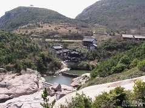
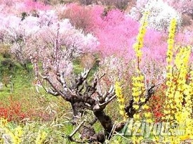
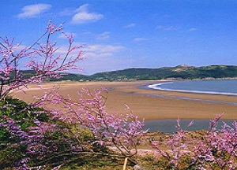
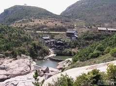
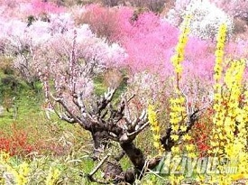
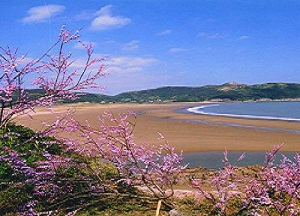
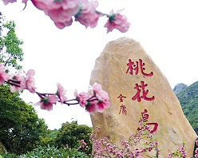
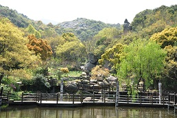
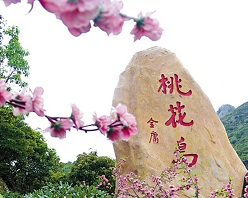
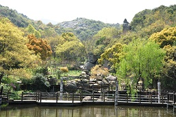

 |
||
 |
||
桃花岛，国家4A级旅游景点，位于舟山本岛沈家门渔港的南面，面积43平方公里，为舟山群岛第七大岛。其中南部的对峙山为舟山群岛的最高峰，山脉向四周延伸，形成群峰起伏，层峦叠起的山海风景。
桃花岛拥有舟山群岛第一高峰——安期峰；舟山第一深港——桃花港；东南沿海第一大石——大佛岩；是中国三大水仙名品之一的普陀水仙和浙江名茶普陀佛茶的主产地，又是浙江沿海林木品种最多的岛屿，素有“海岛植物园”美称。丰富的自然景观、人文景观和神话传说有机融合，形成桃花岛风景名胜区六大景区，即：桃花峪景区、塔湾金沙景区、安期峰景区、大佛岩景区、悬鹁鸪岛景区和桃花港景带，组合成武侠、佛教、道教文化三条旅游专线。拥有金沙日出、金龙吐珠、安期云雾、高山闻钟、百家朝圣、山石桃花、奇洞探幽、桃港雄姿、砾滩涌潮、林带烟树、龙潭帘珠、大佛夕照12大景观和大佛岩、弹指峰、东海神珠、清音洞、白雀寺、仙人桥、含羞观音、龙牙擎天、定海古城、安期炼丹洞等30余处主要景点。
 
